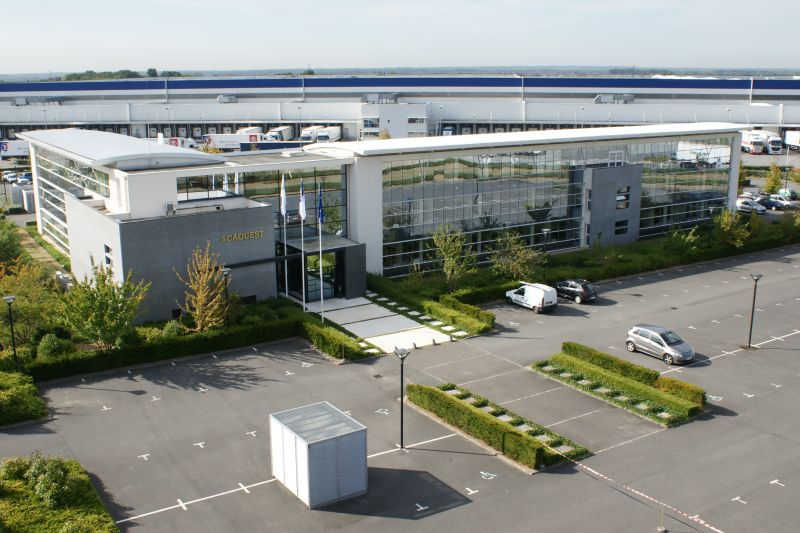
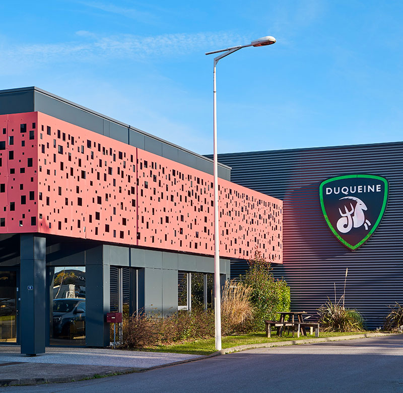

De la théorie à la pratique : mes stages m'ont permis de confronter mes connaissances aux défis concrets de l'informatique en entreprise. Trois expériences enrichissantes qui ont façonné mon parcours et renforcé mes compétences techniques.
Effectuer en seconde SN

Effectuer en première SN et première année de BTS SIO

Effectuer en terminal SN